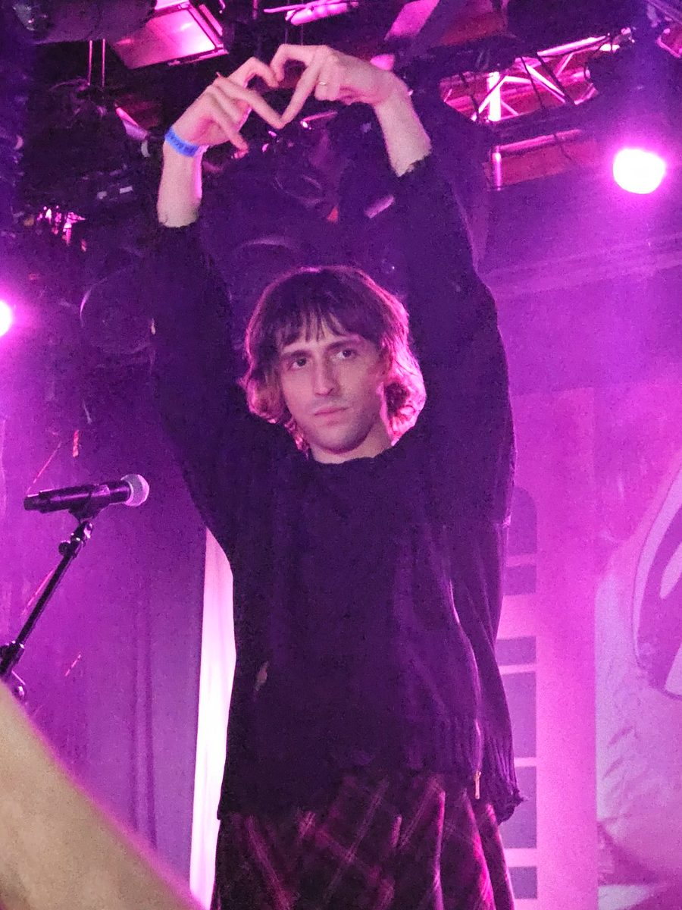

Porter Robinson at Ultra Europe: "I'm gonna play an energetic set that people don’t know"



At 10:30pm in Split, Croatia, our 25 Under 25 leader Porter Robinson delivered the standout mainstage set of Ultra Europe’s first night. When inthemix chatted to the producer less than half an hour before he hit the stage, he was reflecting on the limitations of playing arena-sized sets, and bracing to bend the rules. “I often get questions what do I think about the future of EDM,” he told inthemix. “But in the music that I’m writing, you’ll see fewer and fewer of those tropes being re-deployed.”
Like fellow superstar Avicii (with whom he shared the Ultra Europe stage on Friday night), Robinson has a debut album on the way that’s not about back-to-back bangers. “Nobody has heard the music that I’ve written yet, and I plan to reflect those changes in my live show as well once that music is out,” he said. For the moment, though, he’s holding back on showcasing too much album material in his sets. “I have some edits that I think capture the feel of the new music I’m writing. Otherwise, though, I think it would be out of leftfield if I started playing dreamier kind of stuff. It wouldn’t have the context.”
That said, Robinson’s set on the Ultra Europe mainstage was packed with plenty of twists and turns. While his titanium anthems Easy and Language were the key crowd-pleasers, they were packaged in with everything from hip hop beats to hardstyle.
“I’ve got a couple of new jams,” he told inthemix, as he clutched the laptop that he’d shortly take on stage with him. “I’m gonna try and play an energetic set that people don’t know. Mixed quickly as well; that’s more or less the vibe.” Mixing things up on a giant mainstage has its hits and misses, he conceded. “That’s the nature of risks,” he said. “Some of them work and some don’t. But that’s what makes it exciting!”